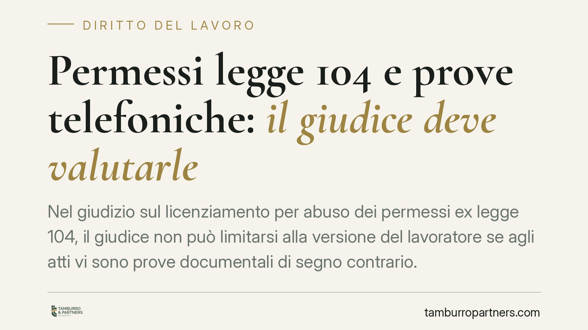

Permessi legge 104 e prove telefoniche: il giudice deve valutarle
Nel giudizio sul licenziamento per abuso dei permessi ex legge 104, il giudice non può limitarsi alla versione del lavoratore se agli atti vi sono prove documentali di segno contrario. Una recente ordinanza della Sezione Lavoro della Cassazione ribadisce il principio: ignorare un elemento decisivo significa motivare in modo solo apparente, con conseguente nullità della sentenza.

Il caso
Una lavoratrice viene licenziata dalla società che gestisce un supermercato per aver utilizzato i permessi retribuiti previsti dalla legge 104 per finalità estranee all'assistenza del familiare disabile. Nel giudizio di impugnazione, il datore produce documentazione telefonica che, secondo l'azienda, smentirebbe la ricostruzione fornita dalla dipendente sull'impiego delle ore di permesso.
Il punto controverso non è tanto il merito dell'abuso, quanto il modo in cui il giudice ha trattato — o, meglio, non ha trattato — quella prova.
> Nota redazionale: il riferimento all'ordinanza numerata è in corso di verifica. Il principio di diritto illustrato è consolidato nella giurisprudenza della Sezione Lavoro; gli estremi esatti del provvedimento vanno confermati prima di ogni uso difensivo.
Inquadramento normativo
L'art. 33, comma 3, della legge 104/1992 riconosce al lavoratore tre giorni mensili di permesso retribuito per assistere un familiare in situazione di disabilità grave. Si tratta di un diritto funzionalizzato: le ore vanno destinate all'assistenza, non a esigenze personali del tutto diverse. L'uso distorto integra un abuso che può giustificare il licenziamento disciplinare, con le tutele di cui all'art. 18 della legge 300/1970.
Sul piano probatorio occorre una precisazione tecnica spesso trascurata. I tabulati di traffico telefonico documentano chiamate ed SMS: chi ha contattato chi, quando e per quanto. La localizzazione del dispositivo — dati di cella o GPS — è altra cosa, soggetta al regime dell'art. 132 del Codice Privacy (D.Lgs. 196/2003), con limiti più stringenti di acquisizione e utilizzabilità. Confondere i due piani è un errore: una prova vale solo se acquisita legittimamente e se dimostra ciò che si pretende dimostri.
Cosa dice la Cassazione
Il principio ribadito è duplice.
Primo: le prove telefoniche non provano automaticamente l'abuso. Un tabulato di traffico, da solo, non colloca necessariamente la persona in un luogo preciso e non racconta cosa stesse facendo.
Secondo, e più rilevante: il giudice non può ignorare una prova decisiva ritualmente acquisita. Se un elemento documentale contraddice la versione del lavoratore, il giudice deve confrontarsi con esso ed esporne la valutazione nella motivazione. Ometterlo significa produrre una motivazione apparente, cioè solo formalmente esistente ma priva di reale percorso argomentativo.
Il parametro è preciso: l'art. 132, n. 4, c.p.c. impone l'indicazione delle ragioni di fatto e di diritto della decisione; l'art. 111, comma 6, della Costituzione sancisce l'obbligo di motivazione dei provvedimenti giurisdizionali; l'art. 360, n. 5, c.p.c., nella formulazione vigente, consente il ricorso per omesso esame di un fatto decisivo discusso tra le parti. Una sentenza che salta un elemento di questa natura è nulla.
Implicazioni pratiche
Per il lavoratore: la fruizione dei permessi 104 va coerente con la finalità assistenziale. Ricostruzioni smentite da documentazione agli atti indeboliscono la posizione difensiva, a prescindere dall'eventuale debolezza della singola prova.
Per il datore: produrre prove telefoniche può incidere sull'esito, ma la loro utilizzabilità dipende dal modo in cui sono state acquisite. Vanno rispettati i limiti dell'art. 4 dello Statuto dei lavoratori, nella formulazione riformata dal D.Lgs. 151/2015 (Jobs Act), sui controlli a distanza, e i vincoli di tutela della riservatezza. Una prova acquisita in modo illegittimo rischia l'inutilizzabilità.
Cosa fare in concreto
Per il lavoratore:
- Utilizzare i permessi 104 in coerenza con la finalità assistenziale e conservare elementi che documentino l'attività svolta.
- In caso di contestazione, chiedere l'ostensione integrale delle prove su cui si fonda l'addebito e verificarne la legittimità di acquisizione.
Per il datore di lavoro:
- Acquisire ogni elemento probatorio nel rispetto dell'art. 4 St. lav. post Jobs Act e della disciplina privacy, distinguendo tabulati di traffico e dati di localizzazione.
- Fondare la contestazione su un quadro indiziario coerente, non su un singolo dato telefonico isolato.
- Verificare la tenuta della motivazione nei provvedimenti favorevoli, per prevenire impugnazioni sul vizio di motivazione apparente.
Consigliamo, in ogni caso, una valutazione preventiva della solidità e della legittimità delle prove prima di assumere decisioni che incidono sul rapporto di lavoro.
---
*Contributo informativo a cura di Tamburro & Partners - Avv. Giuseppe Tamburro. Non costituisce parere legale.*
Ogni storia di lavoro ha i suoi tempi.
Se gestisci HR e vuoi un confronto su contenzioso, ispezioni o licenziamenti, scrivi allo studio. Ti rispondiamo entro un giorno lavorativo.